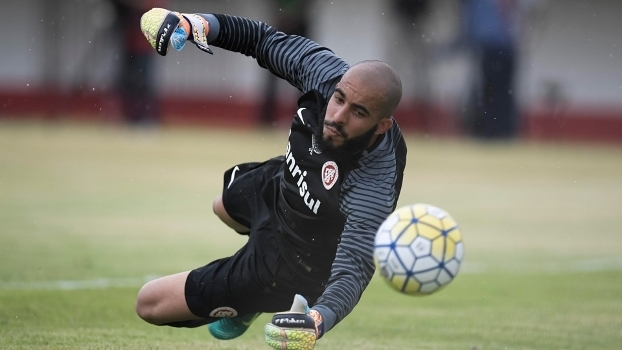

Inter empata com o Flu no Rio e disputará a Série B pela primeira vez
A missão não era fácil e exigiria competência e depender ainda de resultados de outros adversários. ...
Cidades
Crônica de Ademar Rafael
12 de dezembro de 2016 Deixe um comentário
Por Ademar Rafael para o blog do Finfa Rádio Pajeú. Na última sexta-feira do mês ... Leia Mais »